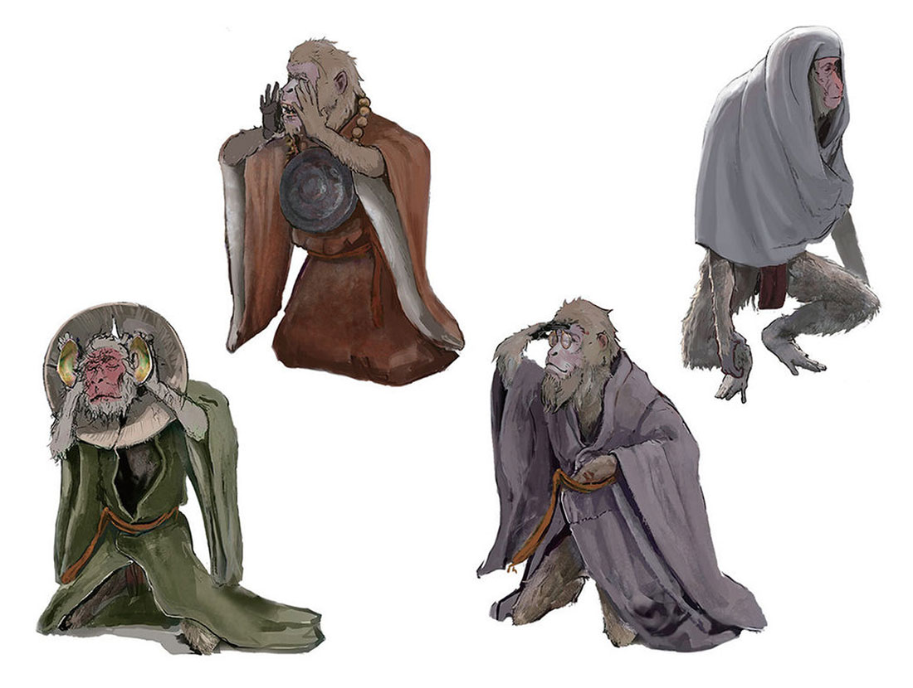
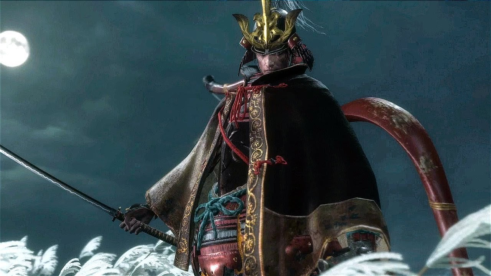
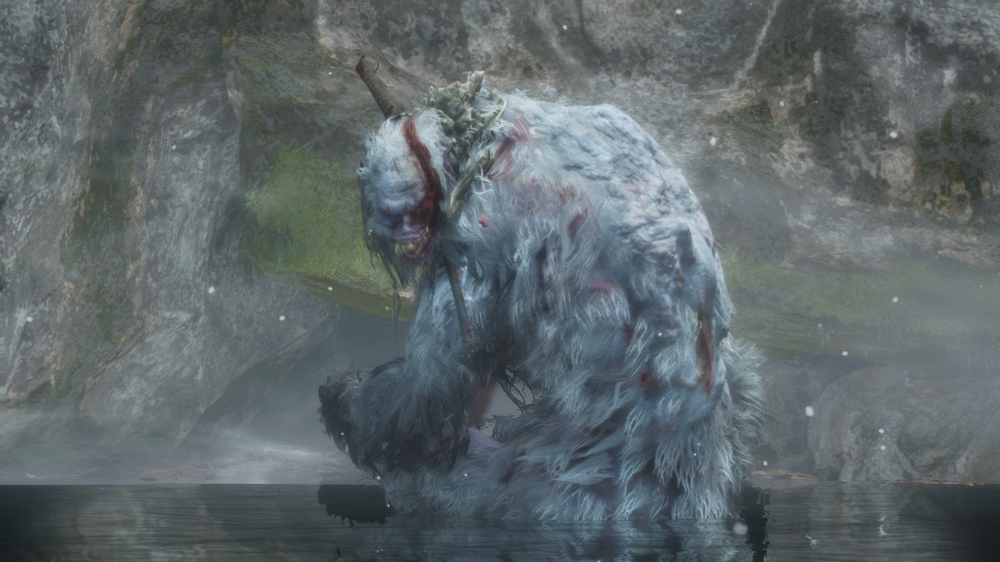
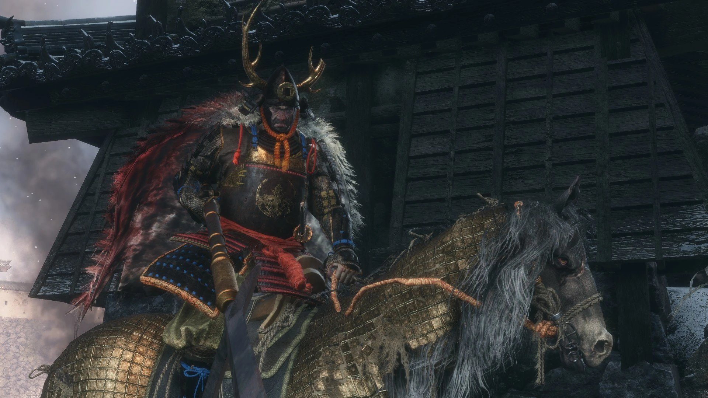
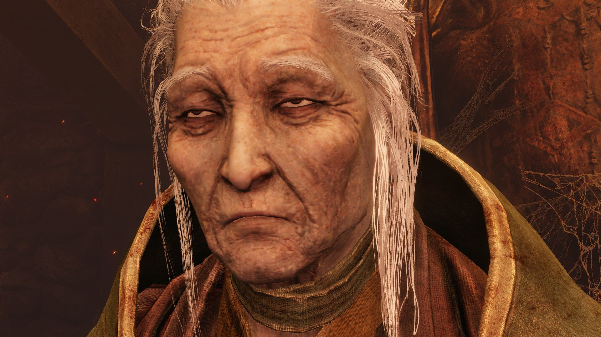
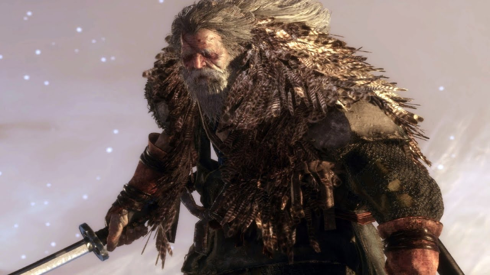

Isshin

This men is a menace to society this is a sword game not gun game. When you get him to phase 2 he will say"How my blood boils! Face me, Sekiro!" and then procced to whip out a gun and a spear. The spear have the AOE of 1/6 of the map and if you cannot dodge it that is 3/4 of your hp gone. After hitting you with the spear your posture level will already be red and just when you think his attack spree is done he will pull out the gun and start to shoot you and when you die to it he will say hEsitATioN iS deFEat like i am the guy who pull out the gun in a sword game.
Divine Dragon

This is one of the weakest boss in the game. As long as you can hook away you can beat him no problem
Demon of Hatred

This will be a pretty hard boss but there is a way for it to fall down a cliff and just die.
Folding Screen Monkey
3 of the monkey is easy to find but there is one that just turn invisible and you will have to go on search spree for 15 mintues
Genichiro Ashina
He is a little bastard.He will show up 3 times in the game. In the first time he will cut one of your arms. The second time he will shouw up as a actually beatable boss and will shows that he have two phase but when you go through the second phase he will summon lighting out of now where and struck you down. There is a hidden third phase. When you beat him he wouldn't die but will run away until the very end of the game where he will only have 1 phase. You beat him for the last time and will will proceed to commit suicide and summon out his grandpa Isshin
Guardian ape

Gyoubu Mastaka Oniwa

Lady Butterfly

owl
